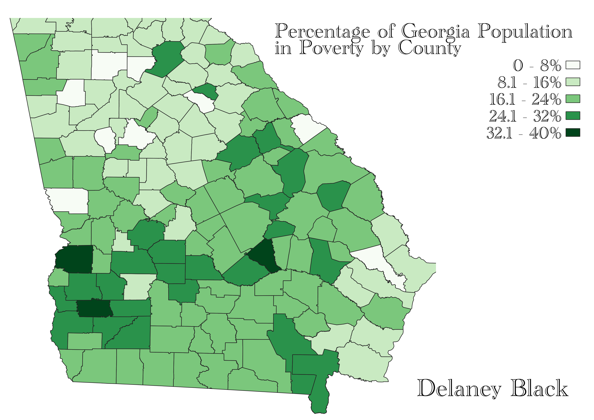

Homework 7: Census data choropleth
Delaney Black
This choropleth depicts the rate of poverty in Georgia by county as a percent of the county's total population. A darker green tone represents a higher rate of poverty.
Forsyth County has the lowest rate of poverty in the state at 4.5%, while Calhoun County has the highet rate at 35.9%.This data can be used to determine allocation of relief & welfare resources at the state level or can be compared to other variables such as average income for a deeper analysis. Data was retrieved from the United States Census Bureau and represents the rates of poverty in 2019.

Data used for this project
Link to cleaned CSV dataset
Link to geoJSON